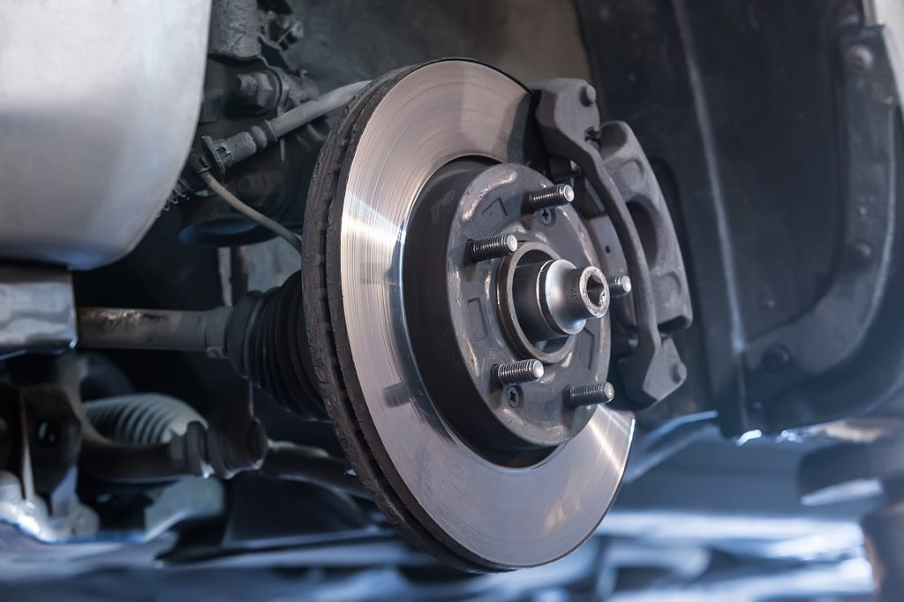

Brake System
The brake system is responsible for slowing down or stopping the vehicle safely by converting kinetic energy into heat through friction. It consists of components that generate and control the braking force applied to the wheels.
Mechanical Process
- Brake Pedal: The driver applies force to the brake pedal to initiate braking.
- Master Cylinder: Converts the pedal force into hydraulic pressure.
- Brake Lines: Transmit hydraulic pressure to the brake calipers or drums.
- Brake Calipers/Drums: Apply friction to the brake rotors or drums, slowing the wheels.
Core Components
- Brake Pads: Create friction against the rotors to slow the wheel.
- Brake Rotors: Rotate with the wheels and are slowed by brake pads.
- Brake Fluid: Transfers force from the master cylinder to the brakes.
- ABS Module: Prevents wheel lockup during emergency braking.